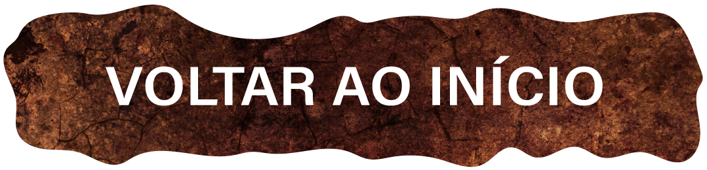

Shrek é o personagem principal da franquia, um ogro rabugento que prefere viver uma vida solitária em seu pântano. Ele é um ogro verde alto, com uma aparência intimidadora, mas um coração bondoso por dentro.
O burro é um personagem engraçado, tagarela e um tanto ingênuo, o que o leva a se envolver em situações cômicas ao longo do filme. Ele rapidamente se torna o companheiro leal de Shrek, oferecendo seu apoio e amizade incondicionais.
Ela é uma princesa que, desde criança, foi trancada em uma torre por um feitiço misterioso. Fiona é retratada como uma personagem forte e determinada, mas com um segredo guardado.
É o principal antagonista do filme. Ele é um governante egoísta e tirânico que busca consolidar seu poder e se tornar o rei do reino de Duloc. Farquaad é conhecido por sua estatura baixa e atitude arrogante e autoritária.
É um personagem impressionante e poderoso. Ela é retratada como uma criatura feroz e imponente, com a habilidade de voar e cuspir fogo. O Dragão é o guardião da princesa Fiona, que está presa em uma torre.
.